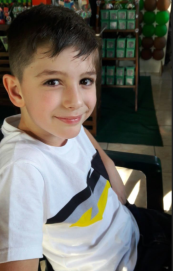
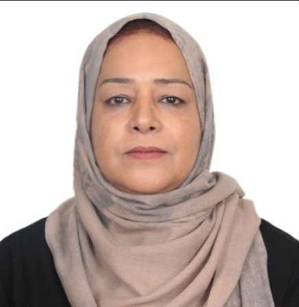

Contribuer au traitement des patients dans le besoin !
Premier cas

Anis selmani, 13 ans
anis souffre d'une leucémie et a besoin d'une greffe de moelle osseuse.
65% complété - 13,000,000/20,000,000 DA collectés
Deuxième cas

fatima fareh, 41 ans
Fatima souffre d'un décollement de la rétine et a besoin d'une chirurgie urgente
40% complété - 17,000,000/40,000,000 DA collectés